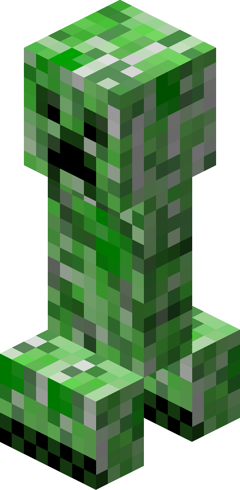
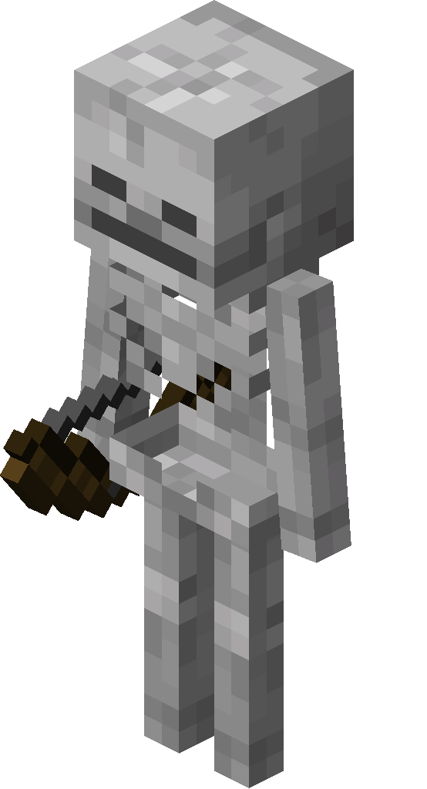
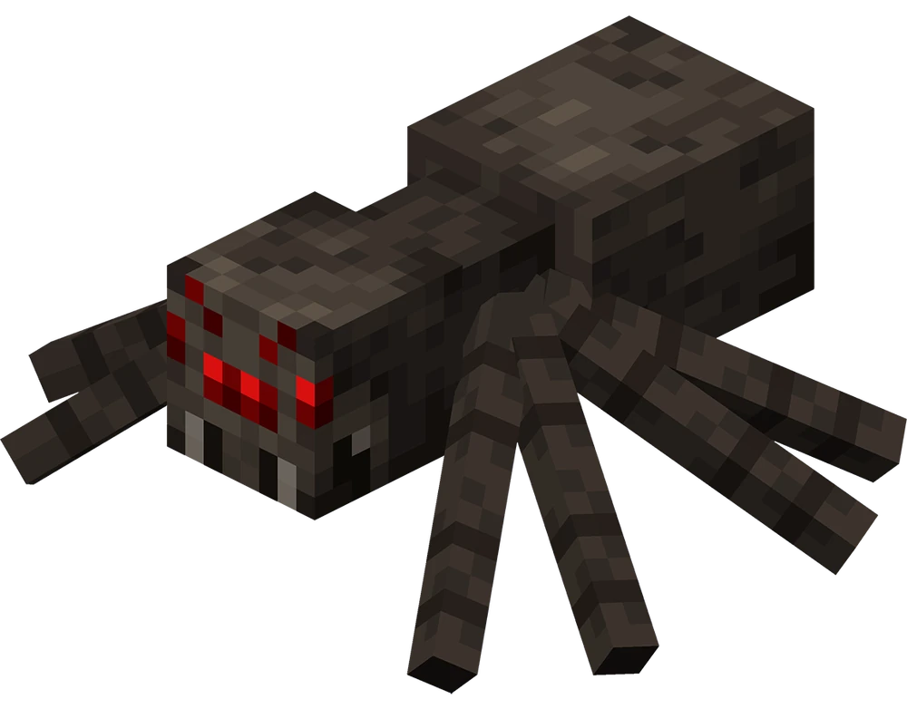
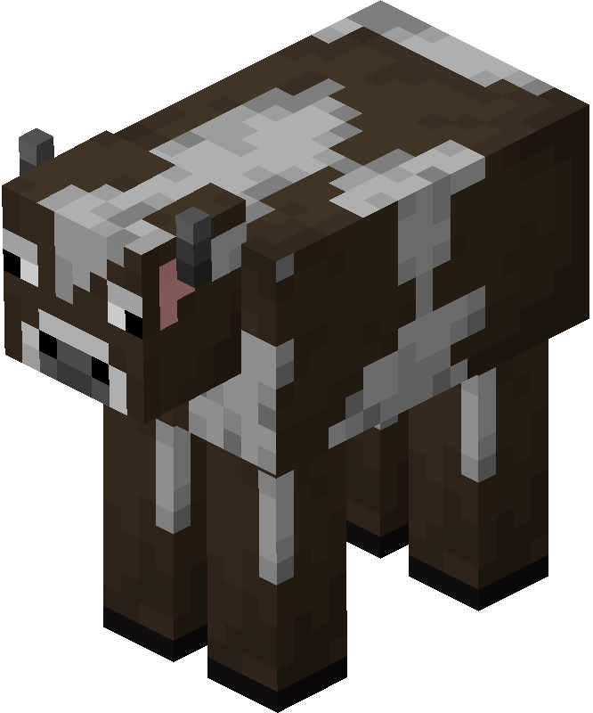
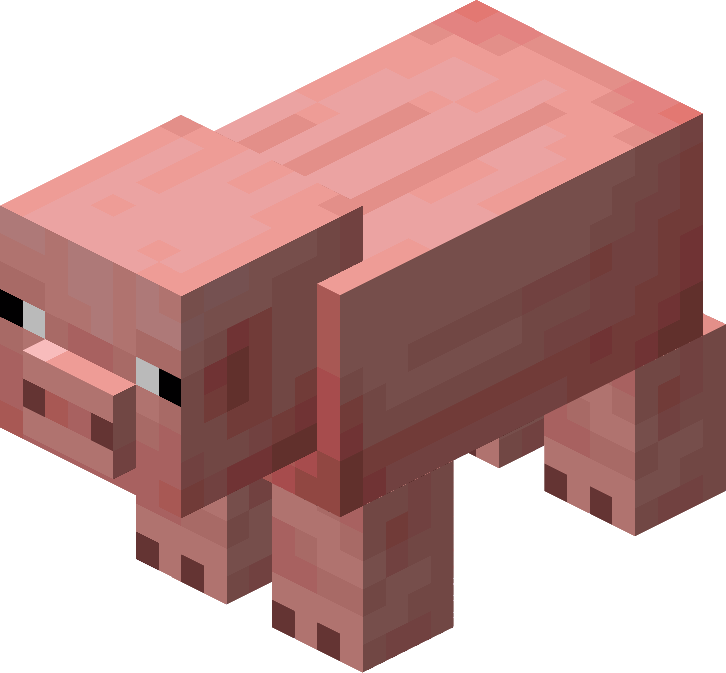
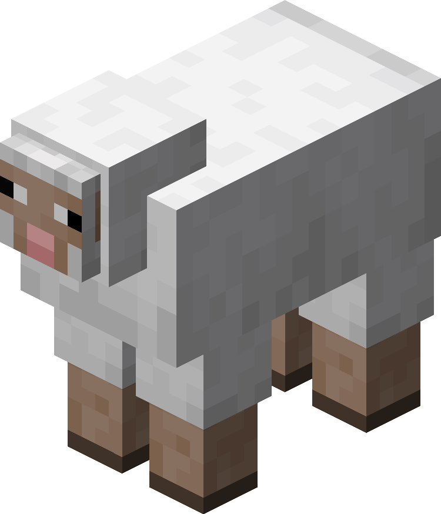
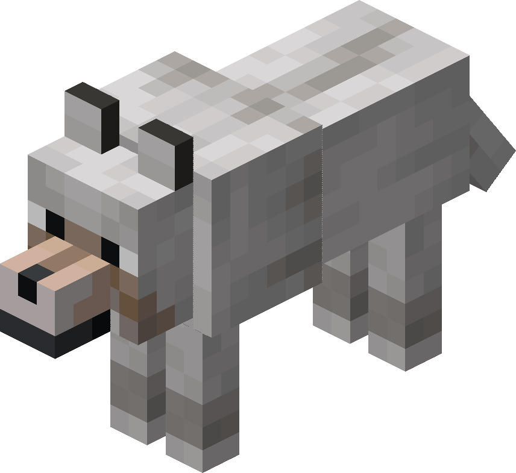

Creeper
Creepers are hostile mobs that are known to explode when they get close.
Minecraft contains many different mobs that the player may encounter while exploring the world.

Creepers are hostile mobs that are known to explode when they get close.

Zombies are hostile mobs that attack players and can spawn in dark areas.

Skeletons are hostile mobs that use bows and arrows to attack players from a distance.

Spiders are hostile when in dark areas, but they become passive when they're in the light.

Cows are passive mobs that provide resources such as milk, leather, and beef.

Pigs are passive mobs that can be ridden when equipped with a saddle.

Sheep are passive mobs that provide resources such as wool.

Wolves are passive mobs that can be tamed by the player. However, wolves can become hostile when attacked.